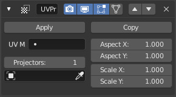

UV 投射修改器¶

投射Blender的logo到猴头上。¶
UV 投射 修改器的作用类似于幻灯片投影仪。 它从控制器物体的负Z轴发出UV贴图 (例如一个 空物体), 并在“光”击中它时将其应用于物体。 它可以选择性地覆盖对象的表面纹理.
下载样例.
选项¶

- UV 贴图
要修改的 UV映射. 默认为激活的渲染层.
- 图像
用于修改器的image（图像）,是可选项；你可以之将UV投射到任意位置。下面提到的Override Image（覆盖图像）选项将定义图像的应用方式。
- 覆盖图像
当勾选此项时，网格上所有顶点的Face Texture（表面纹理）将被Image（图像）项中的图像所替代。这会产生图像重复的效果，这通常并非想要的看结果。
如果没有勾选此项，修改器将被限制仅使用Image（图像）项中的图像作为其Face Texture（表面贴图）。
- 投影源
最多支持十个投射对象。 每个面将选择最接近且其表面法线对齐的投射物体。 投影从负Z轴发射（即照相机或灯直接向下）。 如果投影仪是相机，则投影将遵循其透视/正交设置。
- 物体
指定投影物体.
- X/Y 向比例和X/Y 向缩放
这些允许简单地操纵图像。 仅在将相机用作投射物时才适用 物体.